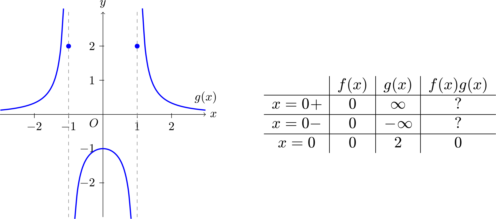
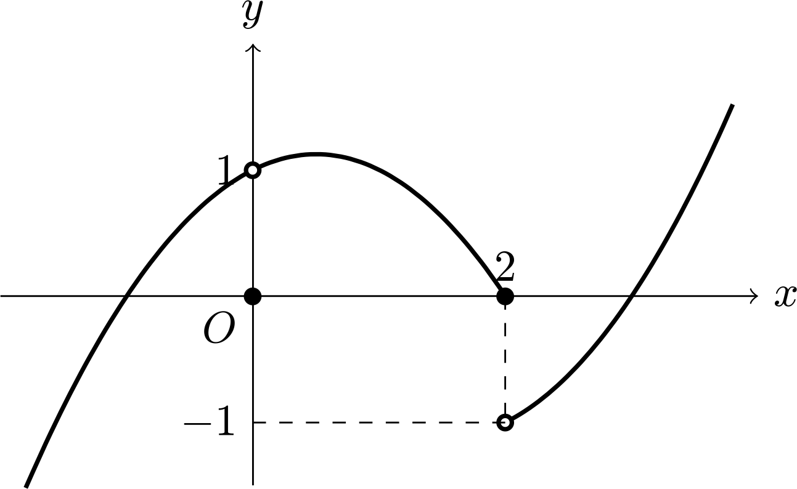

연속의 정의
함수 가 실수 에 대하여 에서 의 좌극한, 우극한, 함숫값이 같으면 연속이라 한다. 연속은 '함수가 이어져있음'을 의미하지 않는다는 점을 유의하자.
연속의 성질
연속함수 에 대하여,
- 도 연속이다.
- 도 연속이다.
- 도 연속이다. (단, )
- 역함수가 존재한다면, 도 연속이다.
- 함수가 잘 정의된다면, 도 연속이다.
연속 함수가 갖는 가장 큰 의미는 극한과 함수가 서로 교환될 수 있다는 점이다.
연속 함수와 불연속 함수 의 연산

1. 는 에서 연속인가?
는 에서 불연속이므로 좌극한, 우극한, 함숫값이 서로 다르다. 반면에 는 연속이므로 에서 좌극한, 우극한, 함숫값이 같다. 이 두 함수을 곱해서 같은 좌극한, 우극한, 함숫값이 같기위해서는 이어야만 한다.
2. 는 에서 연속인가?
는 연속이므로 연속 함수의 성질에 의해 이다. 따라서 이면 에서 가 연속이다. 쉽게 설명하면 그래프에서 불연속일 때의 값들에 대해 의 값이 모두 같으면 연속이다.
3. 는 에서 연속인가?
이 경우에는 정석으로 찾는 방법이 간단하긴 하지만 되도록 합성함수의 그래프를 그려서 전체적으로 판단하는 것이 좋다. 예를 들어 의 치역은 에서 을 지나 다시 로 이동한다. 이를 에 정의역에 넣어 보면 에서 으로 갈 때는 연속이지만 인 순간 불연속이 된다. 같은 방법으로 에서 로 이동할 때 다시 불연속이므로 의 불연속점이 개라는 것을 직관적으로 찾아낼 수 있어야 한다.
연속함수와 불연속함수의 연산
- 가 불연속인 점에서 의 함숫값이 이면 는 연속이다.
- 이면 는 연속이다.
- 의 함숫값이 의 불연속인 정의역 값을 지나지 않으면 는 연속이다.
4. 발산하는 불연속 함수와의 곱셈
함수 에 대하여 함수 가 모든 실수에서 연속이게 하는 다항함수 의 조건을 구해보자.

이 문제는 곱함수의 연속성을 묻는 질문이므로 앞서 본 것과 같이 가 불연속인 값에 대하여 이어야 한다. 그런데 앞선 경우에는 의 극한값이 존재했지만, 이번 경우에는 발산하므로 인 조건으로는 부족하다. 예를들어 로 둔다면, 이다. 이 함수는 에서 극한값은 이지만 함숫값은 이므로 불연속이다. 따라서 극한값도 으로 수렴하게 만들기 위해서는 가 에서 무한대로 발산하는 속도보다 더 빠른 속도로 으로 수렴해야 한다. 이를 정리하면 이다.
예제
- 는 에서 연속인가?
- 에서 정의된 함수 가 다음과 같을 때, 는 연속인가?
- 는 에서 연속인가? 나아가 미분가능한가?
- 실수 전체의 집합에서 정의된 함수 의 그래프는 그림과 같다. 삼차함수 는 최고차항의 계수가 이고, 이다. 합성함수 가 실수 전체의 집합에서 연속일 때, 의 값은?

- 함수 에 대하여, 의 불연속점의 개수는?